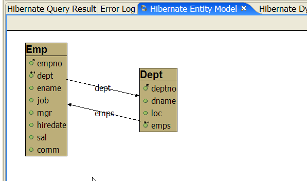
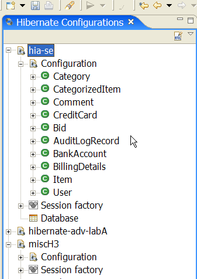
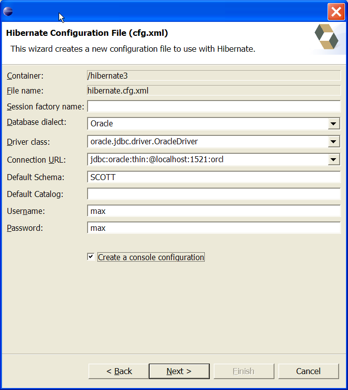
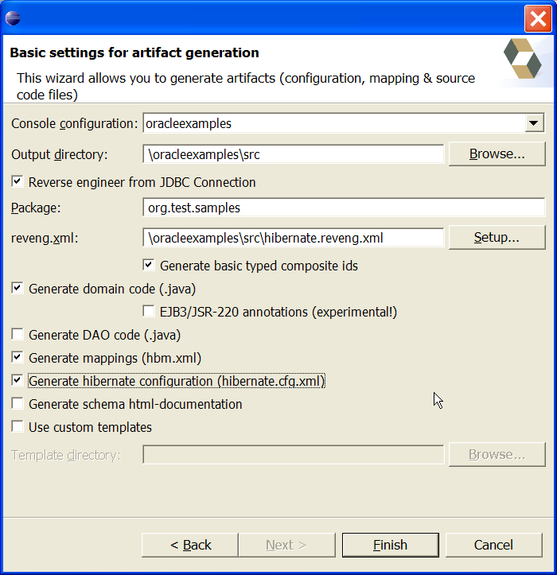

General
Updated development Update site
We have created a specific update site for Hibernate tools (http://download.jboss.org/jbosside/hibernatetools/updates/development) to circumvene the issues about WTP milestones not having proper versioning.
This update contains all the plugins necessary to run the latest version of Hibernate Tools eclipse plugins. If you already have WTP 0.7 installed you should have no problems installing this since we are now based on WTP 0.7.
Note that because of the missing WTP versioning you will have to remove any existing Hibernate Tools plugins from your eclipse installation to make the updatesite work. If not, the old WTP libraries version 1.0 will be used instead of the newer WTP version 0.7 libraries.
Editors
HQL Editor
A full-fledged HQL Editor have replaced the HQL View. The HQL editor has syntax coloring, formatting and code completion for HQL keyword, functions and classnames.
A HQL editor is opened by selecting a Console Configuration and click the HQL editor icon.

Improved hbm.xml outline
Some of the elements in hbm.xml outline have been updated to have more representative icons. Furthermore the outline also includes the text "(Hibernate Tools)" to let the user know which XML editor configuration that they are currently using.

Dynamic Query Translator
If you have the "Hibernate Dynamic Query Translator" view open while writing in the HQL editor it will show you the generated SQL or parsing exceptions.
For fun try and write: from java.lang.Object in the HQL editor and see the complete list of SQL needed to get all mapped objects from your database.

Views
Basic entity model view
Added a "Hibernate Entity Model" view which shows the mapped classes and their associations.
Note: This view is still under development and thus might error on larger or "interesting" models.

Improved Configurations view
The Configurations view now doesn't require a working SessionFactory and as such is more resistant against mapping errors. It further more also uses background loading of children eliminating blocking the whole workbench while opening a new configuration.
A database schema node have also been added under each configuration to allow easy browsing of the mapped database. These nodes might be moved to separate views - feedback welcome!

Wizards
Improved hibernate.cfg.xml Wizard
Added support entering default schema and catalog plus a checkbox for automatic start creation of a Console Configuration based on the entered information.

New hibernate.reveng.xml Wizard
A new wizard supporting the user in create a
hibernate.cfg.xml file. This allows easy definition
which tables should be included/excluded when reverse
engineering.
Note: The wizard currently only support defining table filters and always create a new file - in the next version it will support editing existing file.

Improved Artifact generation Wizard
A new "Setup..." button have been added, allowing you to select an existing reveng.xml or create a new one with the new reveng.xml wizard.
Additional options to support DAO generation have been added too.

Help
Hibernate Wiki search integrated into Eclipse Help
With Hibernate Wiki search integrated into Eclipse Help you have easy access to any Hibernate related information.